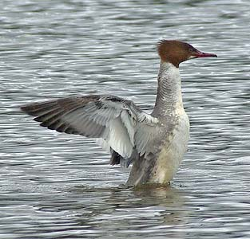

|  |  |
|
What to look for in January
As with last month this is a good time to look out for the more unusual ducks.
The two most recent Bittern sightings were in January.
Cormorant numbers rose steadily year by year to a peak of 49 in January 2000, but expect 20-30 now at this time of year.
Goldeneye and Goosander are interesting ducks that may occur this month and there are four January records of Smew. One of the three Red-breasted Merganser records was in January and Scaup is another unusual duck that is possible. Pintail are not common at Chard, but this is probably the best month for them.
Woodcock is an occasional winter visitor with two records in January. Lapwing are not very common at Chard, but this is the most likely time to see them. It is also a peak month for Coot, however the maximum counts have dropped by a factor of 10 since the 1960s.
A little Gull was seen in 2003 and another in 2018.
The drumming of Great Spotted Woodpeckers may be heard and taken as a very early sign of spring.
One of the three Brambling records for Chard was a bird that stayed from Christmas until mid January. Two of the four Crossbill records were in January. Siskin are regular and should be listened for as they are usually heard before they are seen.
All three Stonechat records are from January.
Cetti's warbler has been a rare visitor and has been seen once in January. This is a bird that I would hope to see more of in the future and is thought to have bred in 2025. Firecrest has been seen twice in January so take a closer look at that Goldcrest, especially if it is very active below head height.
